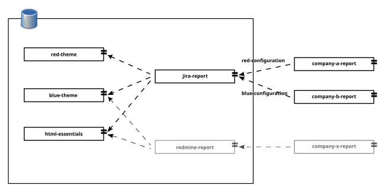

If you had doubts with dependency types, you may have the same doubts with configurations. What should I use Ivy configurations for?
In a similar way as artifact types, anything that makes sense for you as configuration, and obviously fit into something that can be managed with artifacts by Ivy, should be a valid configuration for Ivy.
Ivy configurations are a powerful concept. Each component can have multiple configurations that can be arranged using inheritance. But Ivy configurations don’t stop here, as each configuration may depend on other configurations that can be adjusted for each artifact. The Ivy capabilities to describe dependency configuration rules is outstanding.
We are going to illustrate how can we take advantage of Ivy configurations with a simple example. We are going to take into consideration a report. A report that may have to be sent on a timely basis from a ticketing system like Jira or Redmine.
On a functional level it may not be perceived as convenient as both solutions have their own reporting capabilities, but at the end there may be roles that need visibility on the team performance that usually don’t have access or don’t have time to access some platform on a private VPN or DaaS.
The example will have the following key components, although there are some other smaller ones not listed here.
- A graphical theme, with css files and icons.
- A Jira set of transformation stylesheets and utilities.
- The current data projects, where we are going to perform the Jira or Redmine issue list analysis.

At this point, a question may arise, should our report depend on a specific theme project for each report style/colour set or should we use a specific project with several output configurations? We are going to start with two different theme projects, a red one and a blue one.
Both options are fine (one project with two configurations or two project managed with configurations), and you may choose the strategy that best fits or describes your problem. We will try to illustrate both strategies with the Jira report on our examples
The configuration-jira-report folder from our examples has two themes the blue-theme-report and the red-report-theme. Both projects contain some graphic resources and css that are used in the usual web folders.
The jira report project is going to depend on the theme projects but it’s not going to use them directly. The Jira report project has two different configurations, not surprisingly named red and blue report. We are going to use this project only to develop, test and evolve the Jira Xslts and Xprocs.
<configurations>
<conf name="default" />
<conf name="red-report" extends="default" />
<conf name="blue-report" extends="default" />
</configurations>
<publications>
<artifact name="jira-report" type="transformations"
ext="zip" conf="*"/>
</publications>
<dependencies defaultconf="default">
<dependency org="org.markupuk.examples.arousa"
name="blue-report-theme" rev="1.0"
conf="blue-report->default" >
<artifact name="blue-report-theme"
type="transformations" ext="zip" />
</dependency>
<dependency org="org.markupuk.examples.arousa"
name="red-report-theme" rev="1.0"
conf="red-report->default" >
<artifact name="red-report-theme"
type="transformations" ext="zip" />
</dependency>
<dependency org="org.markupuk.examples.arousa"
name="html-essentials" rev="1.0" >
<artifact name="html-essentials"
type="transformations" ext="zip" />
</dependency>
</dependencies>Once we need to build the actual reports, retrieve the issue list from the Jira API, select a part of the data, etc. we are going create a specific project. This type of projects are going to depend on one of the possible configurations (red or blue).
We are going to call our example project company-a-report. The following lines show its ivy dependency description file.
<ivy-module version="1.1"> <info organisation="org.markupuk.examples.arousa" module="companya-report"/> <configurations> <conf name="default" /> </configurations> <publications> <artifact name="companya-report" type="transformations" ext="zip" conf="default"/> </publications> <dependencies defaultconf="default"> <dependency org="net.vionta.reports.jira" name="jira-report" rev="1.0" conf="default->red-report" > <artifact name="jira-report" type="transformations" ext="zip" /> </dependency> </dependencies> </ivy-module>
You may notice the conf attribute (conf="default->red-report"). This attribute indicates that this project default configuration depends on the jira report “red-report” configuration. If you check on the “jira-report” project dependencies, the red report configuration depends on the red report theme. Also the red report configuration extends the default configuration which brings shared dependencies between both versions.
The example is a very simple demonstration of the Ivy configuration capabilities. Ivy can be used to describe and manage really complex configuration interrelations.